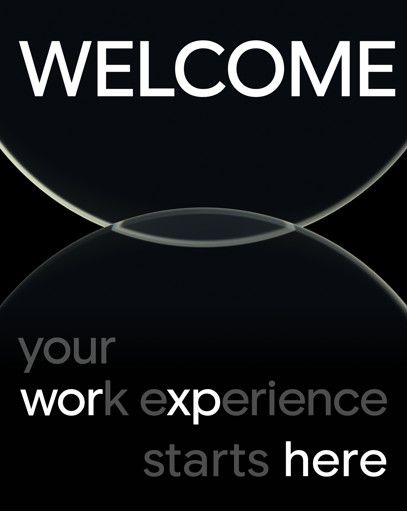
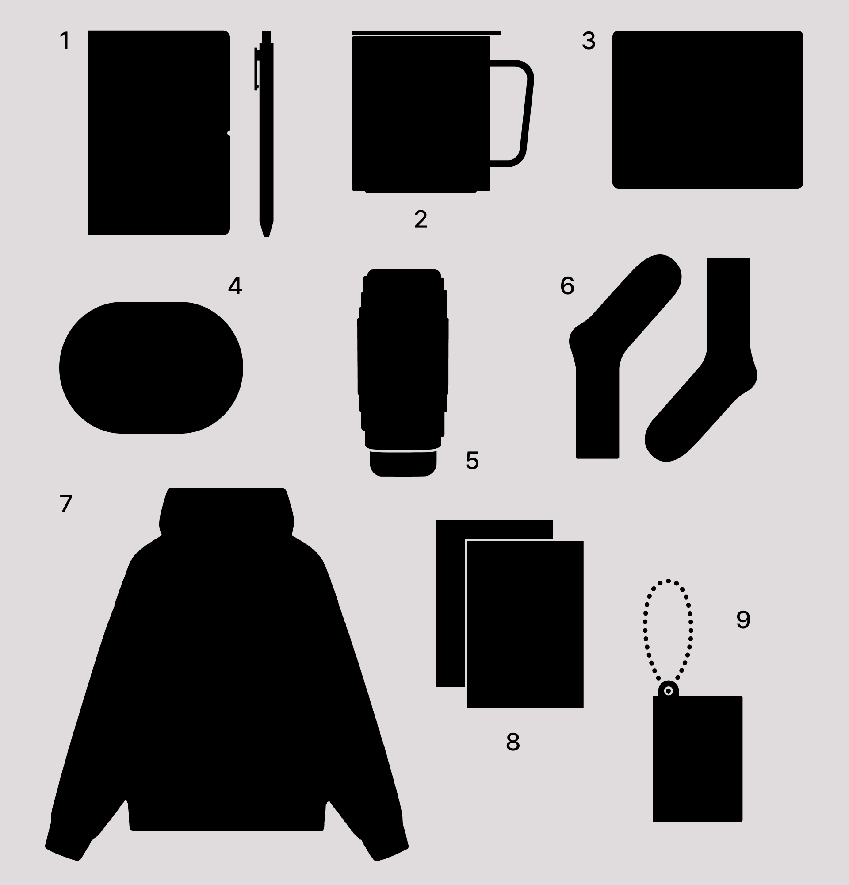
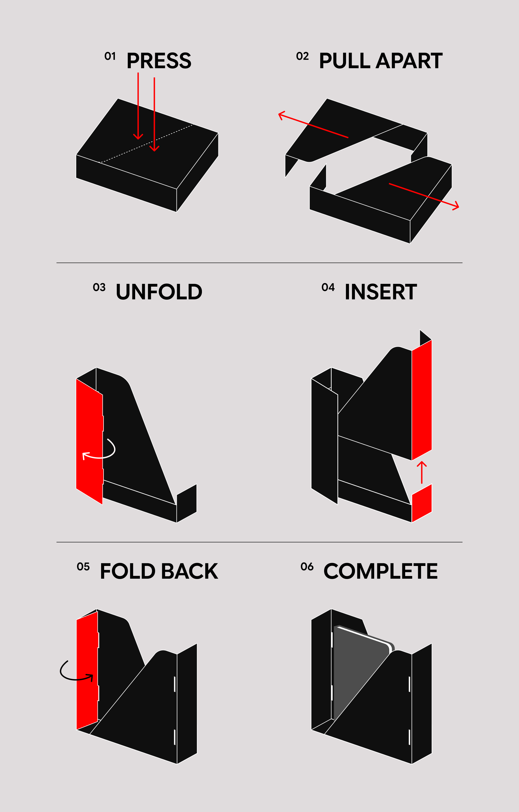
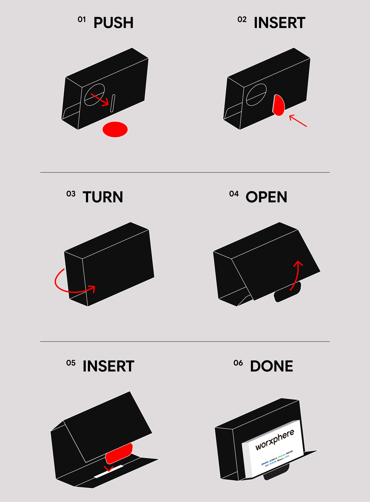
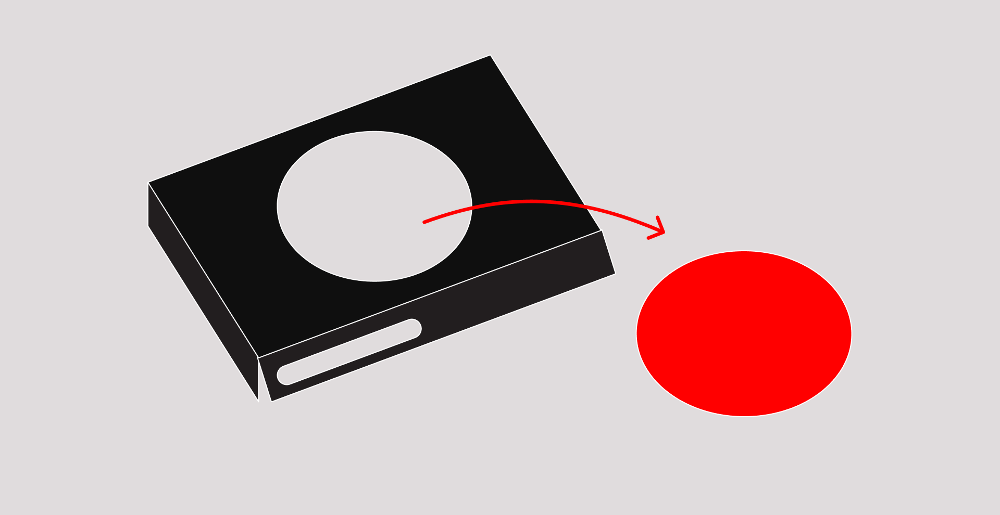

우리는 성장을 기록하고,
함께 대화하며,
서로의 우산이 되고,
일 너머를 경험합니다.
이곳은 우리가 일하는 방식이자,
당신이 경험하게 될 여정의 시작점입니다.

상자를 버리기 전에,
한 번 더 펼쳐보세요.
분해하고 조립하면
책상 위에서
새로운 역할을 시작합니다.
패키지 내부박스를 다이어리나 서적을 수납하는 북엔드로 사용해보세요.
안정적인 사용을 위해 파티션 혹은 벽에 기대어 사용하시기 바랍니다.

텀블러용 지지대를 이용해 카드홀더로 사용해 보세요.

노트 하단의 지지대를 살짝 누르면, 텀블러나 컵을 받칠 수 있는 페이퍼 코스터가 완성됩니다.
